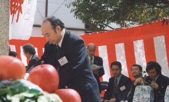

安藤満プロの死去は非常に残念であった。
人気コミック「むこうぶち」は安藤プロ原案の作品。ところが２月半ばに発売された号には、「原案・安藤満」の文字が載っていなかった。「あれっ？」とは思っていたが....
安藤プロの実績や活動については、すでにあちこちで紹介されている。また次号のプロ麻雀や近代麻雀にも詳しく載ると思う。そこで当祭都では、σ(-_-)の思い出話など。
最後にお会いしたのは、京都の伏見にある阿佐田哲也碑前で行われた阿佐田哲也10年祭。いまから７年前（平成９年(1998)の４月のこと。

向かって一番右が故・安藤プロ。その左が名古屋の古川孝次氏、その左が三宅浩一氏。玉串を奉納しているのがσ(-_-)。
式典後のパーティでプロ麻雀界のことや安藤氏自身の闘病のことなどについて雑談した。プロ麻雀界のことはさておき、絶対安静と云われていたが病院から抜け出し、名人戦に参加。見事優勝したときの話などには驚いた。
実はこのエピソー、雑誌などで知ってはいた。しかし本人から詳しく聞くと、ホントに生死の境目状態だったことがよく分かり、あらためて驚いた次第。
逆に最初にお会いしたのは、いまから20数年ほど前。高田馬場で行われたプロ麻雀誌の設立記念パーティでのこと（さすがに、そのときの写真はない）。
パーティはソシアルビルの３Ｆのクラブのような店を借り切って行われた。当時、安藤プロは30歳くらいで、売り出し中の若手プロ。プロ麻雀誌に少林拳打法というタイトルで戦術論を連載していた。
少林拳打法は、さまざまな打ち方を炮蹴とか突手とか少林拳の技で解説したもの。ネーミングを目新しく感じていたので、「むかし少林寺拳法をやっていたので」という話を聞いて、「なるほろ」と思ったことを覚えている。
麻雀のフィールドが異なるので深いつきあいが無いままの別れとなってしまったが、麻雀に対する情熱は人一倍のプレーヤーだった。
いまはただ、ご冥福を祈る。
|